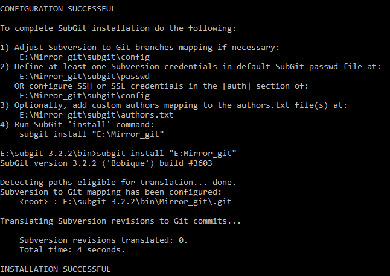

Step two: Configurating the Mirror
Part B
To complete creation of mirror, you have to run the next command:
subgit install "REPOS.GIT"
Where:
REPOS.GIT is a path to the Git/SVN mirror we created earlier.
